Senior Mobility
PROJECT 02 · SENIOR MOBILITY UX
TA:GO, 시니어를 위한 합승형 택시 호출 서비스
앱이 낯선 시니어가 가족의 도움 없이 혼자 택시를 부를 수 있으려면, 어떤 경험이 필요할까요?
PERIOD
2024.09 – 2024.12
ROLE
팀원 (4인 팀)
MY PART
앱 UI · 인터랙션 설계 · PBV 디자인·모델링
WITH TEAM
자료·문헌조사 · 인터뷰 설계·진행 · 방법론 · 기획 · 사용성 평가 분석
COMPETITION
제3회 기아 PBV 아이디어 공모전 · 본선 진출
Chapter 01
배경과 문제
01 · Background
가장 편한 이동 수단인 택시,
왜 시니어는 부르기 어려울까요?
한국은 2025년 65세 이상 인구가 약 20%인 초고령사회에 들어섰어요.
고령운전자 사고는 늘고 있지만 운전을 포기하라고만 할 수는 없어요.
가장 편한 대체 수단은 택시인데, 호출 앱은 복잡하고 요금은 부담스러워요.
20%
2025년 65세 이상 인구 비율
통계청, 2021
70.7%
고령층 디지털정보화 수준
(일반 국민 = 100)
2023 디지털 정보격차 실태조사
92%
택시요금이 비싸다고 응답
메타베이 택시 이용 설문, 2023
Conclusion
운전을 대신할 이동수단은 필요하지만, 지금의 택시 호출 앱은 시니어가 혼자 쓰기 어려워요.
02 · Target
스스로 해결하려는 시니어에게
집중했어요
해외 시니어 이동 서비스는 대부분 전화 호출 방식이에요. 사용은 편하지만,
앱을 쓸 기회가 줄어 디지털 격차가 더 커질 수 있어요. 그래서 스스로 문제를
해결하려는 의지가 높은 ‘디지털 적극 활용형’ 시니어를 타깃으로 정했어요.
39.1%
디지털 적극 활용형
36.2%
저역량·저활용형
24.7%
디지털 소외형
출처: 노년기 정보 활용 현황 및 디지털 소외 해소 방안 모색, 한국보건사회연구원, 2020
Chapter 02
리서치
Process
프로젝트 진행 과정
관찰과 인터뷰로 문제를 정의하고, Low-fi 프로토타입으로 1차 사용성 평가를
진행했어요. 평가 인사이트를 반영해 화면을 개선한 뒤, 최종 프로토타입으로
2차 평가를 진행했어요.
Desk Research
문헌·사례 조사
Observation
WOM · Town Watching
Contextual Inquiry
1차 4명 · 2차 6명
Affinity · Persona
행동변수 21개
HMW · Scenario
Main HMW · 시나리오
1차 사용성 평가
Low-fi · 3명
Final Prototype
인사이트 5개 반영
2차 평가
UT 4명 · Usability 2명
리서치 과정
관찰과 인터뷰에서 수집한 내용을 단계별로 분석해 네 가지 핵심 기능을 도출했어요.
2회
관찰
WOM · Town Watching
10명
심층 인터뷰
1차 4명 · 2차 6명
21개
행동변수
7개 키워드에서 도출
3개
Affinity 방향
상황별 발화를
단계별로 정리
3개
Main HMW
POV에서 발산·수렴
4개
Key Feature
최종 프로토타입
03 · Observation
예상과 달리, 시니어는
연습으로 앱을 익히고 있었어요
기사, 블로그, 유튜브 댓글, SNS에서 시니어와 주변인의 목소리를
수집했어요(WOM). 이어서 시니어 2명이 택시를 호출해 목적지까지 이동하는
과정을 관찰하고 인터뷰했어요(Town Watching). 예상과 달리 시니어들은 몇
번의 연습과 시행착오를 거쳐 앱 사용법을 익히고 있었어요.
온라인에서 수집한 목소리 (WOM)
“요즘은 택시를 앱으로 불러야 한다는데
막막하다. 자식이나 후배들이 알려줬지만
막상 혼자 하려니 안 되더라.”
70대 여성
“분기별로 어르신들께 스마트폰 택시 호출
방법을 교육하고 있지만 대부분 어려움을
호소한다.”
수원시 복지시설 관계자
“젊은이들이 카카오택시를 호출해 타고
가는 동안, 길거리에서 수십 분간 ‘택시’를
외쳐야 했다.”
50대 후반
“어플을 깔고 알려드려도 까먹고
복잡하기도 하고… 매번 제가
잡아드렸어요.”
Thread 사용자
“2시에 전화해 앱 사용 방법을 묻거나
택시를 대신 불러달라는 어르신들이 더러
있다.”
수원시 관계자
“직접 결제하고 싶은데 카카오T를 쓰려고
하면 자꾸 카드 등록하라고 나와서
실패했어요.”
유튜브 사용자
출처: 기사, 블로그, 유튜브 댓글, 인스타그램, Thread
관찰 전 예상과 관찰 후 결과 (Town Watching)
관찰 전 예상
시니어는 디지털 기기 이해도가 낮아, 택시 호출 앱을
쓰는 과정에서 어려움이 클 것이다.
Town Watching 후
디지털 기기 이해도는 예상보다 높았고, 몇 번의
연습과 시행착오를 거쳐 앱을 능숙하게 사용하고
있었다.
“처음에 배울 때 많이 힘들었죠. 두세 번 하고 나서 해보니 되더라고. 안
되는 부분은 반복해보니까 되더라고.”
시니어 사이의 디지털 격차는 나이보다 디지털 활용 능력의 차이로 나타났어요.
04 · Contextual Inquiry
우리가 보고 싶은 것만
묻고 있진 않았을까요?
1차 인터뷰(4명)는 기술·경제·물리 환경과 서비스 경험에 대한 가설을 세우고
진행했어요. 진행 후, 질문이 가설을 확인하는 방향으로 치우쳐 있다는 점을
발견했어요. 그래서 2차 인터뷰(6명)는 가설 없이 시니어의 이동 경험 전반을
묻는 질문지로 다시 설계했어요.
인터뷰 설계의 변화: 가설 확인에서 경험 탐색으로
1차 인터뷰 · 4명
가설 확인 중심
기술적 환경
경제적 환경
물리적 환경
서비스 경험
설계를 바꾼 이유
“혹시 우리가 보고자 하는
방향으로 가설을 설정한 것은
아닐까?”
정해 둔 가설 대신, 시니어의 실제 이동 경험을
이해하는 데 집중했어요.
2차 인터뷰 · 6명 (60·70·80대 각 2명)
이동 경험 탐색 중심
이동 방식과 선택 요인
이동 중 감정과 주변의 영향
이동의 어려움과 해결 방법
이동 중 사회적 상호작용
교통비
Voice
“앱 사용 방법을 배워서 혼자서도 택시로 이동하고 싶지만,
너무 어려워서 시도하기 힘들어.”
심층인터뷰 참여자
2차 인터뷰 종합 인사이트
01
가족에게 묻기보다 스스로
해결하려는 건, 새 기술을 익혔을
때의 성취감과 자기효능감
때문이에요.
02
불편을 감수하고도 합승할 의향이
있는 건, 택시비를 줄일 수 있기
때문이에요.
03
신체적 불편이 커질수록 불안도
커져, 피로가 적고 편안한 이동
환경이 중요해요.
04
처음 보는 사람이라도 같은 동네
주민이면 경계심이 낮아지고
친근감을 느껴요.
Chapter 03
문제 정의
05 · Affinity Diagram
인터뷰 발화를 분류해
세 가지 서비스 방향을 도출했어요
인터뷰 발화를 카드로 옮겨 택시 호출·탑승·이동 중 상황별로 분류하고,
단계별로 상위 의미를 정리했어요. 최종적으로 도출한 세 가지 방향은 서비스
핵심 기능을 정하는 기준이 됐어요.
시니어의 자립적인 이동에는 앱 사용 자신감, 신체적 편안함, 비용 부담 완화가 함께 필요했어요
“아 이걸 내가 해냈구나, 새로운 것을 접해서 사용할 줄 아네.”
인터뷰 발화 U10-13
“택시 호출앱 사용법을 모르니까 두세 번 하고 나서 해보니 할 줄
알게 되었어요.”
인터뷰 발화 U8-03
“계속 실패되는 경험이 있었어요. 결국 택시를 부르지 않고
자차를 이용했어요.”
인터뷰 발화 U7-17
“너무 많은 탑승 정보가 있을 때는 다 읽고 이해해야 되니까 조금
걸리겠죠.”
인터뷰 발화 U9-32
“목적지까지 잘 갔다 올 수 있는지가 가장 걱정거리예요.”
인터뷰 발화 U1-52
“비용이 가장 중요해요.”
인터뷰 발화 U3-4
방향 01
모바일 앱 사용 이해도와 자신감을 높일 수 있는
연습 기반 자립형 솔루션
방향 02
신체적 편안함을 고려한 이동 편의성을 향상시키는
맞춤형 차량 추천 솔루션
방향 03
정보 제공과 경제적 혜택을 기반으로 한 근거리
이동 합승 지원 서비스
06 · Persona
가족에게 의존하지 않고
스스로 이동하고 싶어 했어요
Town Watching 참여자 2명과 심층인터뷰 참여자 10명, 총 12명의 행동을 7개
키워드, 21개 행동변수로 분류해 세 그룹의 행동 패턴을 도출했어요. 주 사용자
박복자님의 목표는 가족의 도움 없이 스스로 앱을 써서 이동하는 것이었고, 이동
경험을 단계별로 나눠 Pain Point와 Needs를 정리했어요.
주 사용자 페르소나
Primary Persona
박복자
67세 · 은퇴한 자영업자
“효율적으로 이동하며 혼자서도
자신 있게 다닐 수 있기를 바라요.”
Life Goal
스마트폰 사용에 재미를 느끼고 점점 능숙해지면서, 대중교통이나 택시를 더 편리하게 이용해
삶의 질이 높아지는 생활을 경험하고 싶다.
Experience Goal
디지털 기술을 적극적으로 활용해 이동 과정 전반에서 자립적으로 이동하고, 다양한 사람들과
어울리며 삶의 질이 높은 노후를 맞이하고 싶다.
End Goal
반복 연습으로 가족 도움 없이 자유로운 앱 사용
같은 연령대와 즐겁게 대화하며 부담 없는 이동
온라인 결제 대신 현금·실물 카드 결제
적은 비용으로 신속하고 안전한 이동
무릎에 무리가 가지 않는 편안한 이동
박복자님의 이동 경험 지도 (User Experience Map)
외출 전
이동 과정
목적지 도착
Stage
01
외출 준비
02
대중교통 탑승 전
03
대중교통 이동 중
04
대중교통 하차 직후
05
택시 호출
HMW 1
06
택시 탑승
HMW 2
07
택시 이동 중
HMW 2
HMW 3
08
택시 하차
Activities
약·핸드폰
챙기기
경로우대
교통카드
챙기기
가까운
지하철역 이동
계단으로
탑승구 이동
전광판으로
배차 확인
만석이라 서서
이동
자리 양보 거절
무릎·발목 통증
엘리베이터가
멀어 포기
출구 계단
오르기
길에서 택시
잡기 실패
앱으로 호출
시도
출발지·도착지
입력
기사와 탑승
위치 통화
탑승 직전 차량
정보 재확인
실시간 위치
확인
기사와 대화
실물카드 결제
결제 정보 확인
Needs
계단·단차 없는
교통수단
배차를
멀리서도 확인
편안한 이동
동네 이웃과
조용한 담소
적은 계단
짧은 이동 거리
간편한 앱 호출
반복 연습으로
가족 도움 없는
앱 사용
차 정보를
이미지·큰
글씨로 확인
설정한 경로로
가는지 확인
기본요금 부담
완화
직접 결제
하차 보조
손잡이
Feeling
Pain Point
매번 교통카드
챙기기
번거로움
안내 화면·음성
인지 어려움
계단 이동의
신체 부담
자리 양보에
대한 미안함
혼잡으로 인한
피로감
역 내 긴 이동
거리
많은 계단
길에서 택시
잡기 어려움
결제수단 변경
방법을 몰라
당황
차종을 몰라
탑승 차량 구분
어려움
경로 이탈에
대한 걱정
교통 혼잡으로
요금 걱정
하차 시 몸을
일으키기 힘듦
HMW 1
택시 호출
모바일 앱 사용 자신감을 높이기 위해
연습과 실시간 피드백 시스템을 결합한
학습 경험을 제공할 수 있을까?
기회요인
택시 호출 앱 사용 전 연습 시간을 충분히
제공하여 자신감 높이기
HMW 2
택시 탑승 · 택시 이동 중
고령층의 안전을 위한 이동 환경에
안전장치와 심리적 안정감을 주는
서비스를 결합할 수 있을까?
기회요인
사용자 맞춤형 차량 및 동승자 정보와, 가족에게
실시간 위치 정보를 공유해 이동 불안감을
낮추고 신뢰도 높이기
HMW 3
택시 이동 중
어떻게 하면 시니어의 택시 비용 부담을 덜
수 있을까?
기회요인
비용 부담을 줄이기 위한 방안으로 비용이
합리적일 수 있는 ‘합승’ 방법 제공
07 · How Might We
실수가 두렵다면,
호출 전에 미리 연습해보면 어떨까요?
POV 문장을 다섯 가지 관점으로 바꿔 질문을 확장하고, 단계별
브레인스토밍으로 Main HMW를 정했어요. ‘어렵다’는 인식을 바꾸려면 실제
호출 전에 연습 환경에서 먼저 성공해보는 경험이 필요하다고 판단했어요.
질문을 좁혀간 브레인스토밍 단계
Question
택시 호출 앱의 어려움에 대한
인식을 어떻게 긍정적으로 바꿀 수
있을까?
Step 1
시니어가 택시 호출 앱을 쉽게
쓰려면 어떤 전략이 필요할까?
Step 2
어렵다는 인식을 바꾸려면, 앱 사용
경험에서 성취감이나 자신감을
주면 되지 않을까?
Step 3
실제 환경이 아닌 가상의 연습
환경에서 연습하면 자신감을 가질
수 있지 않을까?
Main HMW 1
모바일 앱 사용 자신감을 높이기 위해,
연습과 실시간 피드백을 결합한 학습 경험을 제공할 수 있을까?
Main HMW에서 도출한 핵심 기능
01
연습 기능
택시 호출 앱 사용 전, 앱에 대한
이해도와 자신감을 높이는 연습
기능
02
맞춤형 차량·동승자
정보
신체적·심리적 불편함을 줄이는
사용자 맞춤형 차량과 동승자
정보
03
가족 위치 공유
이동 과정에서 심리적 안정감을
높이는 가족 실시간 위치 공유
04
합승 매칭
경로가 비슷한 이용자를
자동으로 매칭해 비용을 줄이는
합승
08 · Scenario
세 가지 핵심 기능을
박복자님의 이동 시나리오로 그렸어요
핵심 기능이 실제 이동 상황에서 어떻게 쓰일지 박복자님의 시나리오로
정리하고, 장면마다 직접 스케치했어요. 택시 호출 전, 이동 과정, 합승 호출의 세
장면에서 사용자가 얻어야 할 경험을 정의했어요.
유저 시나리오 스토리보드
Scenario 01 · 택시 호출 전
“연습 과정을 통해 택시 호출 과정을 따라 해보며, 실제 앱 사용 전에 충분히 자신감을 가질 수 있어야 한다”
01
택시 호출 서비스에서 연습
모드 기능을 선택해요.
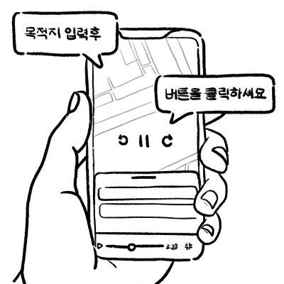
02
연습 시작 전, 짧은 영상
가이드가 ‘목적지 입력’ 과정을
보여줘요.
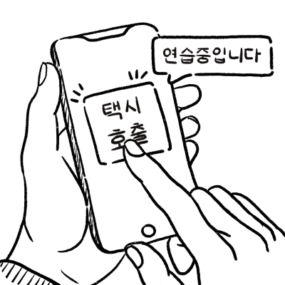
03
영상을 본 뒤, 택시 호출
과정을 직접 연습해요.
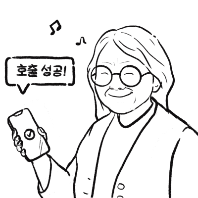
04
연습으로 성공 경험을 쌓으며
성취감을 느껴요.
Scenario 02 · 택시 이동 과정
“맞춤 추천된 차량과 동승자 정보를 쉽게 파악하고, 위치 정보를 가족에게 공유해 이동 중 불편함과 불안감을 낮춰야 한다”
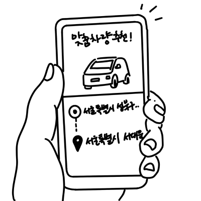
01
출발지와 도착지를 입력하면,
이전 탑승 기록과 선호도로
맞춤 차량이 추천돼요.
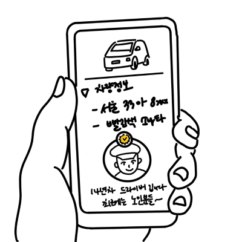
02
추천 차량 정보와 기사님의
매너 점수, 간단한 소개를
확인해요.
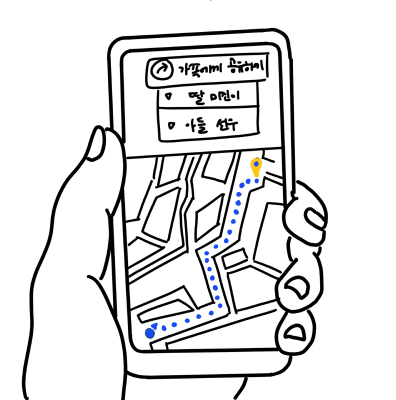
03
가족 공유 기능으로 이동
경로를 실시간으로 공유해요.
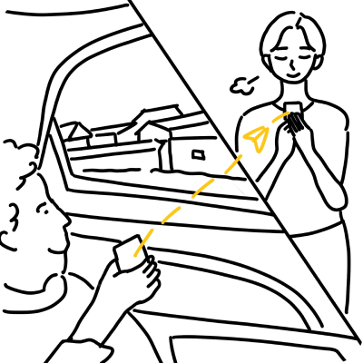
04
집에 있는 딸과 실시간 위치,
예상 도착 시간을 서로
확인하며 안심해요.
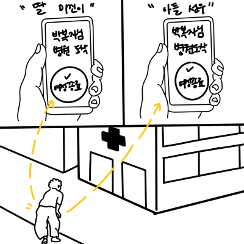
05
도착하면 여정 종료 알림과
이동 정보가 본인과 가족에게
전달돼요.
Scenario 03 · 합승 호출
“경로가 비슷한 다른 이용자와 자동으로 매칭되어, 합승으로 이동 비용을 줄일 수 있어야 한다”
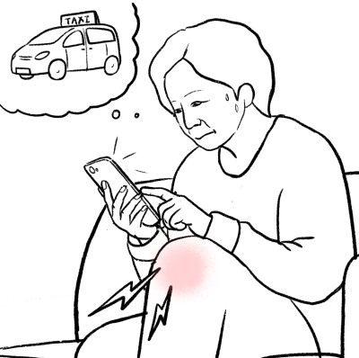
01
병원 방문이 잦아져 택시비가
부담된 박복자님이 합승
서비스를 시도해요.
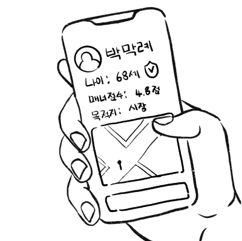
02
경로가 비슷하고 매너 점수가
높은 사용자가 우선 매칭돼요.
03
배차 차량 정보와 도착 예정
시간을 한눈에 확인하며
안도해요.
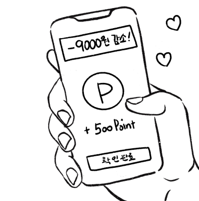
04
탑승 후 최종 결제 금액,
절감된 비용, 적립 포인트를
확인해요.
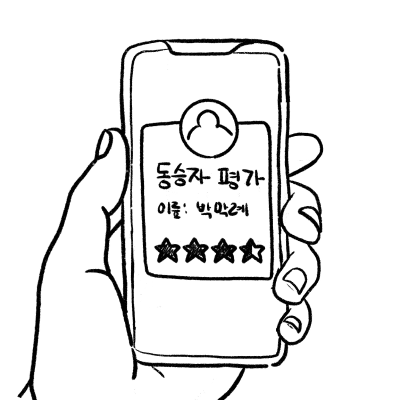
05
동승자의 매너 점수 평가를
마쳐요.
Chapter 04
1차 평가와 개선
09 · 1st Usability Test
Low-fi 프로토타입으로
시인성과 직관성을 평가했어요
혼자·같이 탑승 선택, 동승자와 기사 성향 프로필, 결제 수단, 결제 내역으로
Low-fi 프로토타입을 만들어 시니어 3명과 평가했어요. Maze로 과업별 성공
여부와 오클릭률, 소요 시간, 클릭 위치를 기록했어요.
과업별 화면과 결과
Maze 클릭 히트맵은 붉을수록 클릭이 많이 몰린 위치예요.
51
/ 100
Maze 사용성 점수
과업 성공률, 오클릭률, 소요 시간을 종합해 Maze가 산출한 점수예요.
과업별 결과
Task 1
대화 없이 혼자 이동할 택시
호출
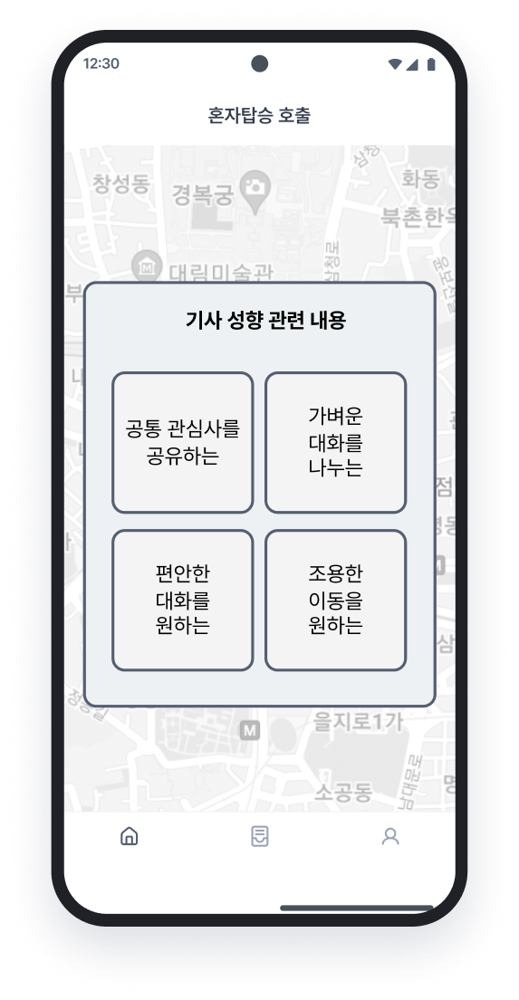
성공 2/3
오클릭률 67~88%
Task 2
공통 관심사가 맞는 사람과
합승 호출
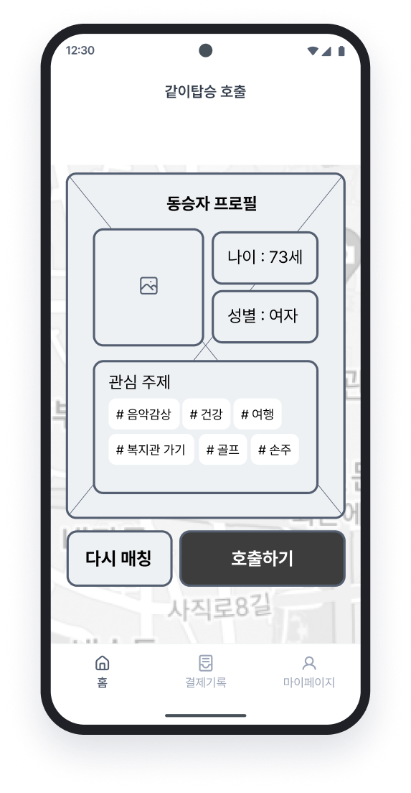
성공 2/3
오클릭률 50~83%
Task 3
결제 수단 중 ‘직접 결제’ 선택
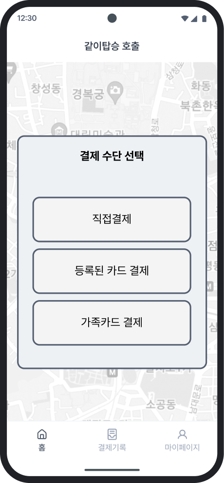
성공 3/3
오클릭률 75% (1명 측정)
Task 4
결제 내역에서 택시 비용 확인
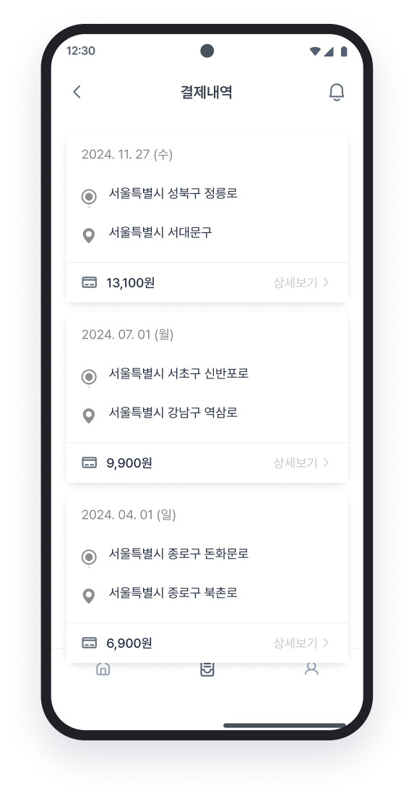
성공 2/3
오클릭률 25~91%
가장 어려워한 두 화면 · Maze 클릭 히트맵
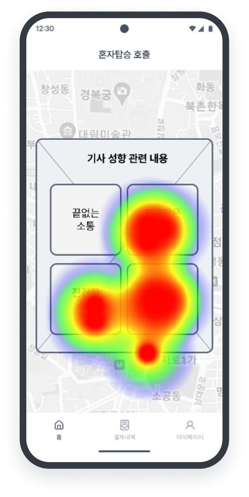
기사 성향 선택 화면
성향 선택지 사이에서
오래 망설였어요
네 개의 성향 선택지로 클릭이
흩어졌어요. 선택지가 텍스트로만
되어 있어, 원하는 성향을 고르는
데 시간이 오래 걸렸어요.
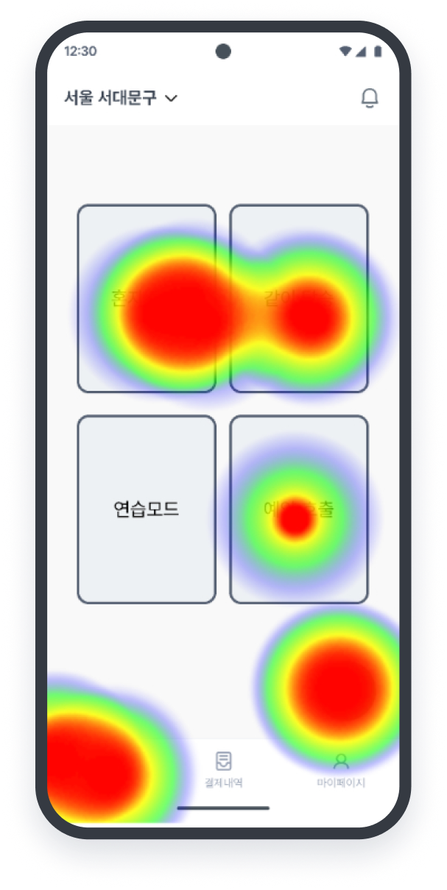
첫 화면 (홈)
하단 메뉴를 찾지 못해
헤맸어요
클릭이 가운데 탑승 버튼과 화면
모서리로 흩어졌어요. 하단
GNB의 아이콘과 글씨가 작아
‘결제기록’을 찾는 데 오래
걸렸어요.
10 · Iteration
1차 평가에서 도출한 인사이트 5개로
화면을 개선했어요
참여자별 결과를 함께 분석해 인사이트 5개를 도출했어요. 정보 표현과 선택
단계는 호출 화면 전반에서 개선했고, 다음 행동을 안내하는 인터랙션은
연습모드에 반영했어요.
1차 평가 인사이트와 개선 내용
Insight 01
이미지와 직관적인 텍스트를 함께 제공해야 한다
텍스트만 있던 선택지에 이미지와 쉬운 라벨을 함께 제공했어요.
“뭐가 출발이었는지 도착인지 잘 모르겠어. 좀 쉽게 표시해주면
이해가 잘 될텐데.”
— U2 발화
Insight 02
텍스트 크기는 최소 20 이상이어야 한다
최소 글씨 크기를 20으로 높였어요.
고령층 UI 가이드라인에 따라 텍스트 크기를 적용했으나, 읽기에
작다고 느꼈다.
— U2 관찰 기록
Insight 03
상세한 프로필 정보와 인증 요소가 필요하다
나이·성별만 보이던 동승자 프로필에 ‘마음에 들어요’ 호감도를 추가했어요.
“나이와 성별 정도만 보이는 건, 그 사람에 대해 불안감이 낮아진다는
생각은 잘 안 됐다.”
— U1 발화
Insight 04
최소한의 정보만 제공해야 한다
동승자 성향 선택 단계를 없애고, 상대의 매너를 프로그레스바로
보여줬어요.
화면에 글씨가 많아지면 고민하는 시간이 길어졌고, 직접 선택해야
하는 과정을 부담스러워했다.
— U1 관찰 기록
Insight 05
다음 과업을 자연스럽게 유도하는
인터랙션이 필요하다
처음 보는 동승자 프로필 화면에서 참여자들이 당황해 다음 과업
진행이 늦어졌어요. 그래서 연습모드에 다음에 누를 버튼을
알려주는 ‘깜빡임’ 효과와, 연습 중임을 알리는 화면 가장자리
강조를 추가했어요.
“기능을 잘 못 쫓아가겠어서… 설명이 좋지.”
— U3 발화
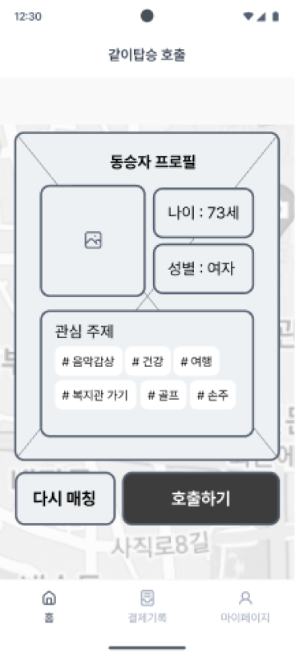
1차 Low-fi 와이어프레임
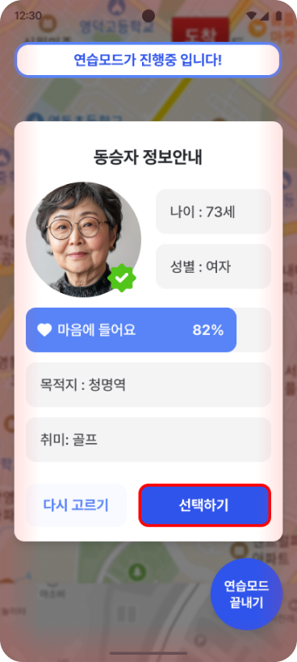
최종 프로토타입 · 연습모드
Chapter 05
모바일 앱
11 · Practice Mode
연습모드로 미리 해보면 더 쉬워져요
연습모드는 실제 호출 화면과 버튼을 단계별로 안내하는 튜토리얼이에요.
호출을 처음 해보는 시니어도 실수 걱정 없이 같은 흐름을 먼저 따라가 볼 수
있어요.
연습모드의 세 가지 설계 포인트
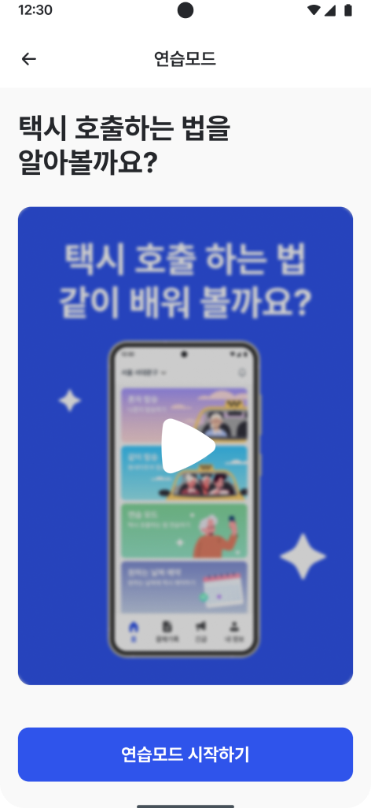
Point 01
연습 시작 전, 튜토리얼 영상
무엇을 연습하는지 먼저 영상으로 보여줘요.
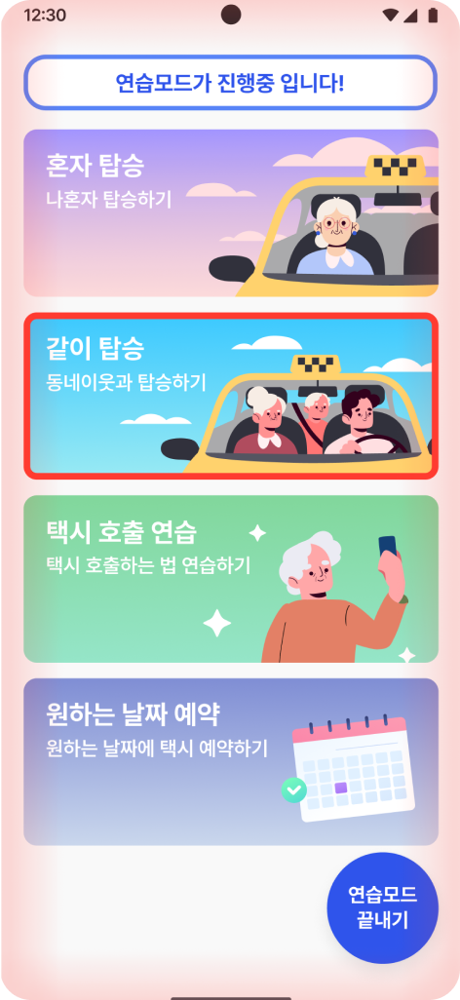
Point 02
버튼 클릭을 유도하는 인터랙션
다음에 누를 곳이 빨간 깜빡임으로 표시돼요.
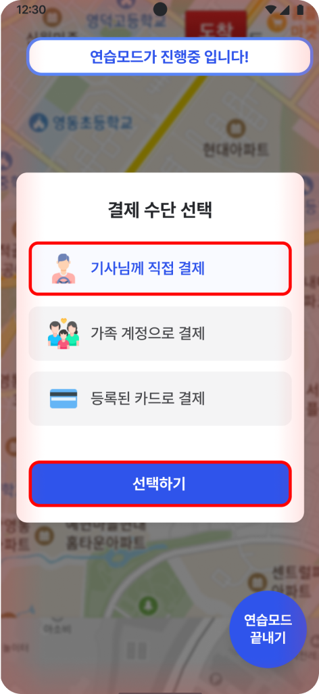
Point 03
화면 가장자리 강조
연습 중이라는 상태를 화면 테두리로 알려줘요.
연습 모드
연습은 이렇게 진행돼요
01
홈에서 ‘택시 호출 연습’을 선택해요.
02
연습 시작 전, 튜토리얼 영상으로 전체 흐름을 확인해요.
03
깜빡이는 버튼 안내를 따라 호출 과정을 직접 연습해요.
04
연습을 마치면 같은 흐름으로 실제 호출을 진행해요.
12 · Key Features
신체적·심리적·경제적 부담을
덜어주는 기능을 더했어요
동승자를 선택할 때, 혼자 이동할 때, 요금을 낼 때 느끼는 부담에 맞춰 기능을
설계했어요. 세 기능 모두 인터뷰에서 확인한 불안과 비용 부담을 근거로 했어요.
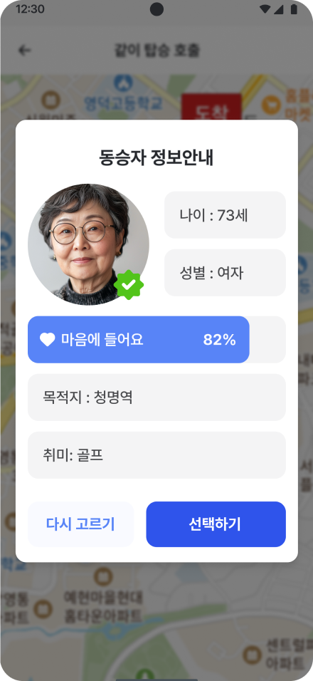
같이 탑승
성향에 맞는 동승자 프로필과 호감도, 신체
조건에 맞는 차량 자동 추천을 제공해요.
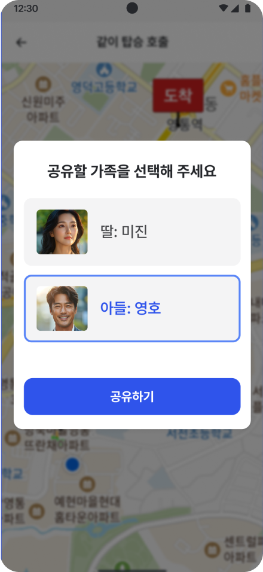
가족 위치 공유
탑승을 시작하면 등록한 가족에게 이동 경로가
실시간으로 공유돼요.
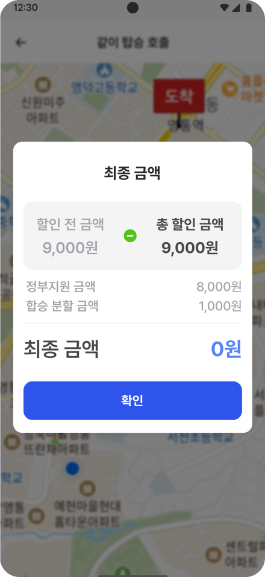
합승과 교통비 지원
혼자 타면 교통비 지원이 자동 적용되고,
합승하면 요금이 나뉘어요.
Chapter 06
모빌리티
13 · PBV
이동 시간이 교류의 시간이 되도록
차 안을 설계했어요
앱에서 선택한 동승자, 차량 조건, 도착지 정보가 실제 이동 공간에서도
이어지도록 PBV 내부를 설계했어요. PBV 디자인과 모델링을 맡았고, 시트
배열은 팀과 아이디어를 함께 정리했어요.
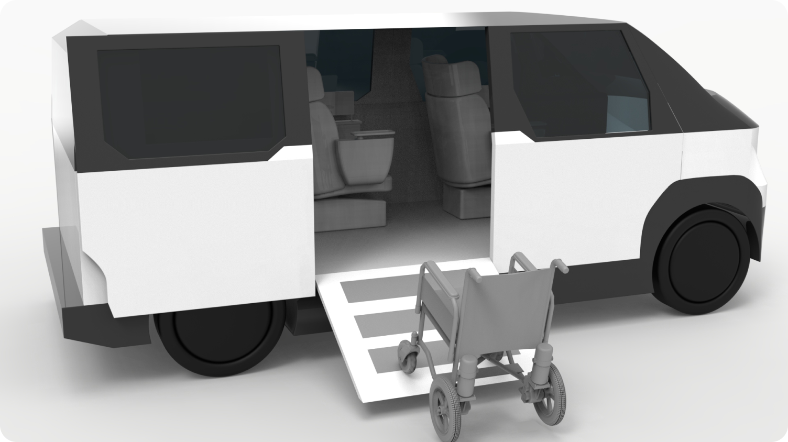
승하차용 슬로프를 펼쳐, 휠체어나 보행 보조기구로도 그대로 타고 내려요.
시트 배열
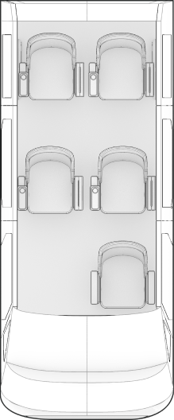
소지품
보관함
소셜 시트
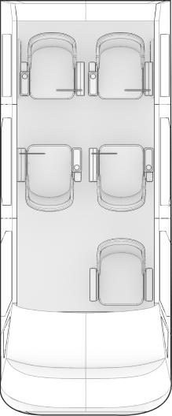
소지품
보관함
기본 5인승
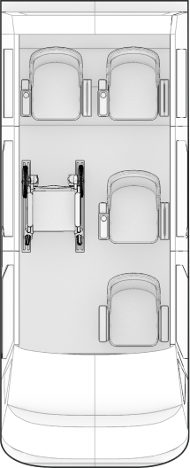
소지품
보관함
휠체어 탑재 가능
기본 5인승, 소셜 시트, 휠체어 탑재
세 가지 배열로 구성했어요.
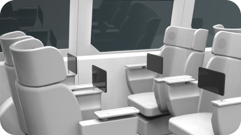
소셜 시트 배열
좌석을 마주 보게 배치해 이동 중
자연스럽게 대화할 수 있어요.
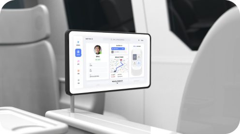
동승자 프로필 디스플레이
팔걸이 디스플레이로 동승자 정보와
이동 경로를 확인해요.
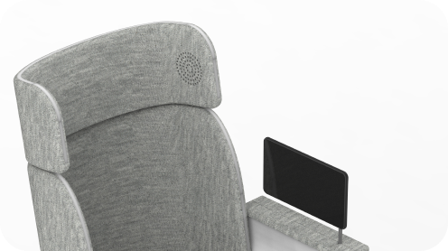
개별 도착지 음성 안내
좌석별 음향으로 각자의 도착지를
알려 혼동을 줄여요.
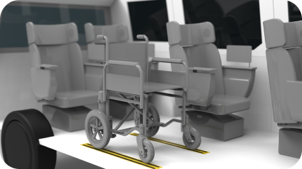
슬로프와 휠체어 고정 레일
보행 보조기구나 휠체어로도 안전하게
타고 내려요.
Chapter 07
2차 평가
14 · 2nd Test
연습 기능과 가족 공유 기능이
가장 좋은 평가를 받았어요
최종 프로토타입으로 시니어 4명과 사용자 평가를, 그중 2명과 사용성 평가를
진행했어요. 연습 기능은 4명 모두에게 좋은 반응을 얻었어요. 반면 정보량과
결제 순서는 여전히 어렵다는 의견이 나왔어요.
평가 참여자와 기능별 반응
83세 · 여
IT 능숙도 하 · UT · Usability
78세 · 여
IT 능숙도 하 · UT · Usability
67세 · 여
IT 능숙도 상 · UT
78세 · 남
IT 능숙도 상 · UT
01
연습 기능
체감 난이도 초반 ‘어렵다’ 2명
중후반
‘보통’ 1명 · ‘쉽다’ 1명
Good
“가장 유용한 기능이 연습모드인 것 같다. 앱이 처음이라
낯설지만, 연습 기능이 있으니 잘 쓸 수 있을 것 같다.”
Bad
“연습모드 빨간색이 누르라는 건지 잘 몰랐다. 맨 처음에
더 친절한 안내가 있어야 할 것 같다.”
02
맞춤형 차량 정보
사용자·사용성 평가 모두 이해하기
쉽다는 반응
Good
“유용하다. 이 나이 되면 몸이 아프니까. 언제 다칠지도
모르고.”
Bad
두드러진 부정 의견 없음
03
사전 동승자 정보
불안 완화에 도움 · 정보량은 의견이 나뉨
Good
“정보가 있으면 안심은 되네요. 이 사람이 어떤 사람인지
간단하게라도 알 수 있으면 좋은 것 같아요.”
Bad
“그 사람이 믿을 만한 사람인가에 대한 정보를 더 알고
싶다.”
04
가족 위치 공유
이동 중 불안 완화에 4명 모두 긍정적
Good
“너무 유용하다. 안심이 되고, 아들들이 내가 어디 가는지,
도착했는지 알 수 있으니까 서로 안심이 될 것 같다.”
Bad
두드러진 부정 의견 없음
05
합승과 교통비 지원
비용 절감에 긍정적 · 탑승 전 결제 순서는
낯설어함
Good
“지하철은 무료고 버스는 돈을 내는데, 택시는
현실적으로 불가능하니까 이런 절감 부분이 들어가는 게
좋았다.”
Bad
“왜 계산하는 게 먼저 나와? 나 아직 타지 않았는데.”
Chapter 08
설계 원칙과 과제
15 · Design Principles
시니어의 자립은
익숙함과 신뢰에서 시작돼요
두 차례 평가에서 반복해서 확인된 문제를 네 가지 설계 원칙으로 정리했어요.
글씨 크기 같은 가이드라인만으로는 충분하지 않았고, 익숙한 사용 방식과 믿을
수 있는 정보가 함께 필요했어요.
평가에서 확인한 근거와 설계 원칙
01
익숙한 사용 방식을
그대로 이어가요
홈 아이콘을 ‘집’으로 인식해,
결제 내역으로 가는 메뉴를 찾지
못했어요.
U1 · 1차 평가
02
글보다 이미지로 먼저
전달해요
텍스트로만 된 선택지 앞에서
읽고 이해하느라 한 화면에 오래
머물렀어요.
U1·U2 · 1차 평가
03
상대를 판단할 근거를
충분히 보여줘요
“그 사람이 믿을 만한
사람인가에 대한 정보를 더 알고
싶다.”
2차 평가 참여자
04
아낀 비용을 눈에
보이게 보여줘요
“택시는 현실적으로
불가능하니까 이런 절감 부분이
들어가는 게 좋았다.”
2차 평가 참여자
16 · Next Steps
남은 문제를
다음 설계 과제로 정리했어요
2차 평가에서 반복해서 나온 아쉬운 반응을 다음 설계 과제로 정리했어요.
어려움은 특히 연습을 처음 시작하는 순간과 요금을 확인하는 순간에 몰렸어요.
평가에서 드러난 문제와 다음 설계 방향
과제
평가에서 드러난 문제
다음 단계
01
연습 시작 안내
“연습모드 빨간색이 누르라는 건지 잘 몰랐다. 맨 처음에 더 친절한
안내가 있어야 할 것 같다.”
2차 평가 · 연습 기능
연습을 시작할 때 깜빡임의 의미를 먼저
알려주는 첫 안내 추가
02
합승 요금 정보
“정부지원금 8천원, 분할합승 1천원 이게 무슨 의미인지 모르겠다.
정보가 너무 많아서 이해 못했다.”
2차 평가 · 합승
최종 부담 금액을 먼저 보여주고, 할인
항목은 필요할 때 펼쳐 보는 구조
03
결제 순서
“왜 계산하는게 먼저 나와? 나 아직 타지 않았는데..”
2차 평가 · 합승
탑승 전에는 예상 금액만 안내하고,
결제는 도착 후로 이동
04
동승자 신뢰 정보
“그 사람이 믿을만한 사람인가에 대한 정보를 더 알고 싶다.” 반면
“정보가 많은 것 같다”는 의견도 함께 나왔어요.
2차 평가 · 사전 동승자 정보
핵심 신뢰 정보만 먼저 보여주고,
인증·후기는 선택해서 보는 방식
05
평가 규모
1차 3명, 2차 사용성 평가 2명으로 진행해 결과를 일반화하기
어려워요.
평가 설계
더 많은 시니어와 실제 앱 환경에서
과업 기반 재평가
Next Project
03
한때 온 가족이 모여 보던 IPTV, 왜 이제는 켤 이유가 사라졌을까요?
개인화 시대 IPTV 이용의 기술 회피-복귀 메커니즘 분석